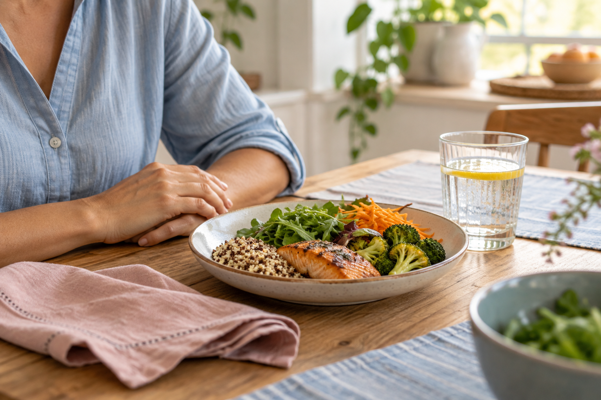
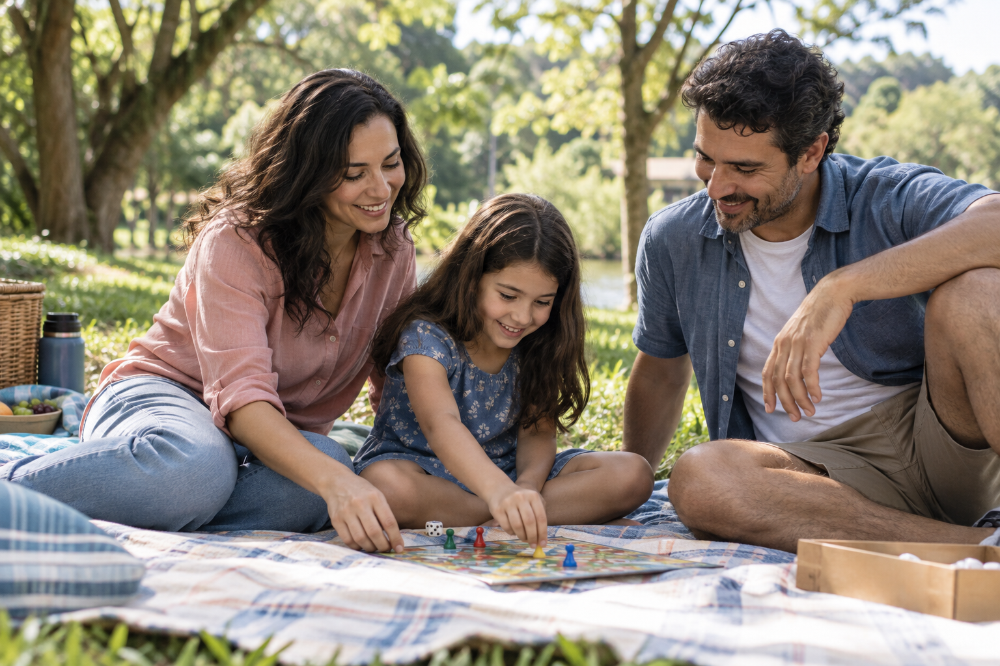

ALIMENTAÇÃO E EMOÇÕES
Ansiedade e compulsão alimentar: vamos conversar sobre essa relação?
Quando a comida se mistura às emoções, acolher a dificuldade é o começo da conversa.
Ler artigoInfância, emoções e convivência, com espaço para as dúvidas de quem cuida.

Quando a comida se mistura às emoções, acolher a dificuldade é o começo da conversa.
Ler artigo
Entre brincadeiras e mudanças na rotina, o cuidado também encontra espaço nas férias.
Ler artigo
Uma história na tela pode virar um encontro com o mundo que seu filho está descobrindo.
Ler artigoCSE 01 · Lote 06 · Sala 102
Taguatinga Sul · Brasília / DF
Atendimento presencial e online.
(61) 3351-4551